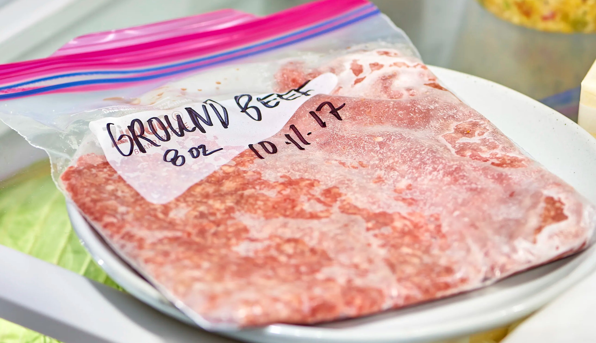
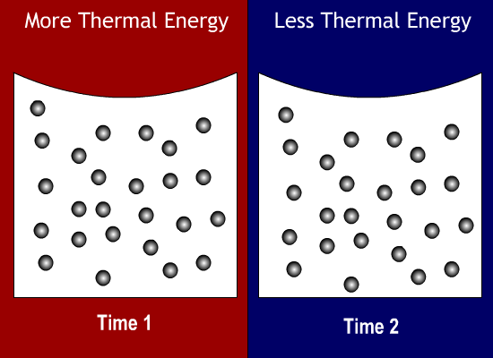
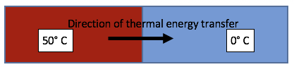
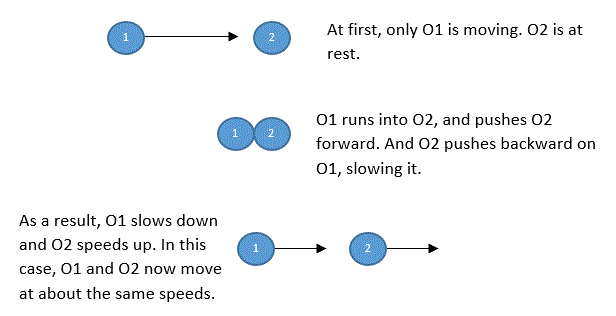
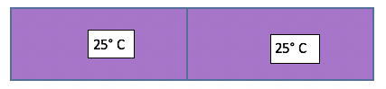
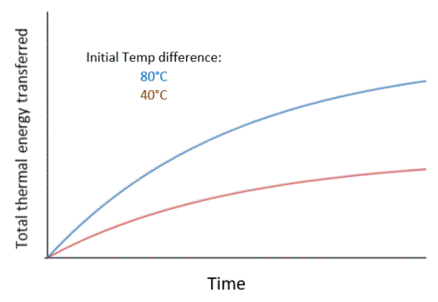

Thermal Energy
Why is thermal energy important to understand? Knowing how the temperatures of objects are affected by factors like the temperature of the surrounding air or other objects that are touching allows us to make good decisions. For example, this will let us know whether it's better to open a window or turn on the air conditioner to cool a room.
Or how we can thaw food quickly to make dinner for our families. Does frozen food thaw faster in water or in the air?

But what is thermal energy? An object's thermal energy is defined as the amount of energy of the object due to the energy of motion - or kinetic energy - of all the atoms and/or molecules that make up the object.
So....
- When the atoms and/or molecules that make up an object move around faster, the object has more thermal energy.
- When the atoms and/or molecules that make up an object move around slower, the object has less thermal energy.
The simulation below represents a very tiny (microscopic) object, made of only about 20 atoms. This object is shown at two different times and with two different amounts of thermal energy. At Time 1, the object is at room temperature. At Time 2, the object has been cooled to a very low temperature. This is why the atoms are moving slower at Time 2 than Time 1.
The thermal energy—or total kinetic energy of all the atoms—of the object is greater at Time 1 than Time 2.
Thermal energy vs. Temperature. Thermal energy and temperature are closely related concepts. Both have to do with the kinetic energy of the atoms and/or molecules that make up objects or substances. But thermal energy and temperature are not the same thing.
Here's the difference:
- The temperature of an object (or non-solid substance, like water in a glass) is defined as the average kinetic energy of all the particles (atoms and/or molecules) that make up the object (or substance).
-
The thermal energy of an object is the total amount of kinetic energy
of the particles (atoms and/or molecules) that make up the object (or substance).
- So, because thermal energy is the SUM of the kinetic energy of all the molecules/atoms that make up the object, the thermal energy of an object depends on the SIZE of the object.
- BUT, because the temperature of an object is the AVERAGE kinetic energy of all the molecules/atoms that make up the object, the temperature of an object does NOT depend on the size of the object.
- Example. Let's say that there are two objects (A and B) made of the same material and at the same temperature. This means that the molecules of Object A (above, left) are moving around with the same average speed as molecules of Object B (above, right). But Object A has more mass, so there are more atoms and/or molecules that make up Object A than Object B. As a result, the total amount of kinetic energy—or thermal energy of the object—is greater for Object A than Object B.

Thermal Energy goes from hotter to cooler objects. Thermal energy is transferred between two objects at different temperatures that are touching each other. When two objects that are at different temperatures touch each other, the cooler object will become warmer and the warmer object will cool.
This is represented in the picture below, where the higher-temperature object (red) is on the left and the lower-temperature object (blue) is on the right. Thermal energy will be transferred from the hotter to cooler object. "Heat" is the amount of thermal energy that is transferred in this process.
Why does thermal energy transfer from warmer to cooler objects? This happens because the molecules that make up the warmer object are moving around faster (on average) than the molecules that make up the cooler object. When the faster-moving molecules bump into the slower-moving molecules, the faster-moving molecules tend to slow down and the slower-moving molecules tend to speed up.
This idea is represented below, with two objects (Object 1, O1 and Object 2, O2):
Because of this transfer of motion between the molecules, the warmer object will cool down and the cooler object will warm up. Eventually, the two objects will become the same temperature. This final temperature will be somewhere between the starting temperatures of the objects.

*In the simulation above, the color red just represents higher temperature, where molecules are moving around with more speed and kinetic energy. The color blue just represents a lower temperature, where molecules are moving around with less speed/kinetic energy. So just think of red as faster-moving molecules and blue as slower-moving molecules (and purple as molecules moving in between these two speeds).
Speed of Thermal Energy Transfer. How quickly thermal energy is transferred from the hotter to colder object depends on the temperature difference between the objects.
- The greater the temperature difference is between the objects, the faster thermal energy is transferred to the colder object.
- As the difference in temperatures between the two objects gets smaller, the amount of thermal energy transferred in a given time decreases.
This relationship is shown in the graph below (for two objects of the same material and mass). The height of each line (the red and blue line) shows the total amount of thermal energy transferred to the colder object at that time. The red line shows this for two objects that initially had a temperature difference of 40 degrees C. The blue line shows this for two objects that initially had a temperature difference of 80 degrees C.
As you can see, the amount of thermal energy transferred to the colder object is always higher when the two objects had a greater initial temperature difference (the blue line). Also, the speed of thermal energy transfer, which is the steepness (or "slope") of each line at any point in time, is always higher for the blue line.
Let's say that the cooler object needed to gain a certain amount of thermal energy (for example, to reach a certain temperature or to start melting). This is shown in the graph below, where the dotted line represents this amount of energy. The cooler object would gain this amount of thermal energy faster when there was a bigger initial temperature difference between the objects. You can see that the time to gain this energy is less for the 80 degree initial difference (blue line) than for the 40 degree initial difference (red line).

In general, how fast thermal energy is transferred from the hotter to colder object depends on the temperature difference between these objects.
It also depends on other things like the mass of the objects and how much thermal energy it takes for the object's temperature to change (called the "heat capacity"). The heat capacity of an object depends on what the object is made of. Some materials (like metals) need less thermal energy to increase in temperature compared to other materials (like water). This is because the thermal energy transferred to the cooler object may be converted to other types of kinetic energy (such as rotational and vibrational) that are not related to temperature.
Thermal energy transfer between solids and gases. Thermal energy will be transferred between two solid objects at different temperatures. But thermal energy will also transfer between a solid and a gas (from whichever is warmer to whichever is cooler). For example:
- In the picture below, a balloon is sitting in the sun. The picture shows the cross-section of the balloon and the air inside the balloon. The outside surface of the balloon is warmed by the air and by the sunlight hitting the surface of the balloon. Some of the sunlight will be converted into thermal energy in the balloon. Thermal energy will transfer from the (warmer) outside surface of the balloon to the (cooler) inside surface of the balloon. Thermal energy will continue to be transferred from the (now warmer) inside material of the balloon to the (cooler) air inside the balloon. The arrows in the picture show the direction of transfer of thermal energy.

- How exactly is thermal energy transferred from the balloon material to the air inside the balloon? The molecules that make up the material of the balloon will transfer their kinetic energy (through millions or billions of collisions) to gas molecules that make up the air inside the balloon. The molecules of air in the balloon will move around faster as a result; that is, they will gain kinetic energy.
You can watch a fun video demonstration of gas in a balloon cooling here.
Thermal energy can also be transferred between a solid and a liquid. For example:
- Thermal energy due to the motion of the water molecules will transfer from the (warmer) water to the (colder) ice cube in the water. The arrows in the picture show the direction of thermal energy transfer: from the water to the ice. The water molecules surrounding the ice cube will collide with the molecules that make up the ice cube and transfer their energy of motion to the molecules of the ice cube. Of course, as you know, this leads to the ice cube melting in the water. It also causes the water to cool, since the liquid water molecules lose kinetic energy to the molecules of the ice cube.


{kind=link}